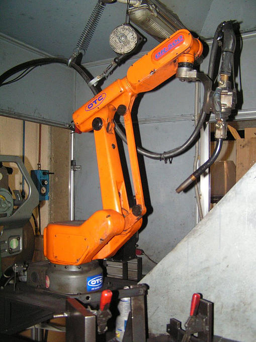

Macchinari
- Pressa eccentrica da 200 t (Cattaneo)
- Pressa eccentrica da 100 t (Pressa Ross)
- Pressa eccentrica da 63 t (Pressa Ross)
- Pressa eccentrica da 63 t (Pressa Ross)
- Pressa eccentrica da 60 t (pressa rov)
- Pressa eccentrica da 50 t (Pressa San Giacomo)
- Pressa eccentrica da 2.5 t (Galbaldini)
- Robot di saldatura (OTC)
- Robot di saldatura (TRS)
- Robot di saldatura DR 3000 (OTC)
- Robot di saldatura DR 500 (OTC)
- Saldatrice proiezione bifase (Fimer)
- Saldatrice proiezione bifase (Cea)
- Pressa Piegatrice (Colgar)
- Buratto
- Segatrice a nastro Bianco
- Tornio (Ceriani David)
- Nastratrice (APM)
- Trapano (Bimak)
- Trapano Serrmac
- Trapano (filettatrice) Record
- Molatrice Sb
